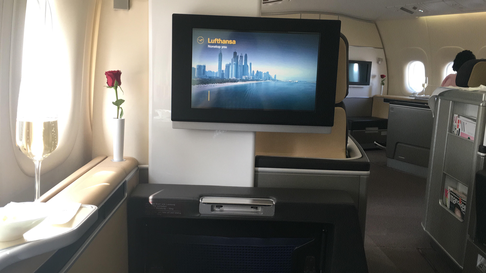
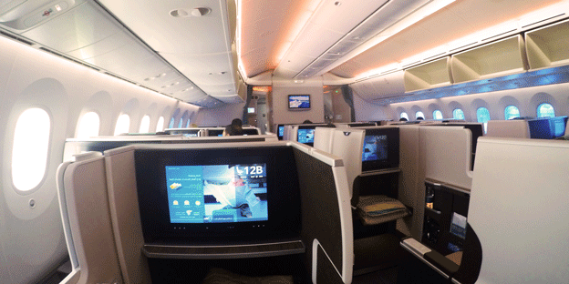

<div class=" background2">
  <div class="container  background1">
    <div class="row">
      <div class="col-lg-9 col-sm-8">
        <br>
        <h1>Endlich Meilenexperte werden!</h1><br>
        <h2>Hier bist du richtig, wenn du alles über die Welt der Meilen und Hotelbonusprogramme erfahren möchtest!</h2><br>
        <p>Diese Webseite bietet dir Informationen zu den Meilenprogrammen Miles &amp; More und Topbonus. Zusätzlich findest du in meinen <a href="https://www.youtube.com/channel/UCHcBFsnpfWV5QEVsc5t4_hw" target="_blank" rel="noopener"><strong>Youtube Videos</strong></a> Erklärungen der größten Hotelbonusprogramme wie z.B. Hilton Honors oder IHG Rewards Club sowie weitere <strong>Tipps und Tricks aus der Welt der Meilen</strong>.<br>
        <br>In der Rubrik <strong><a href="http://www.meilenpunkteundmehr.de/sammeln/">Meilen Sammeln</a></strong> erfährst du welche Möglichkeiten du hast um viele Meilen zu generieren. Verschenkte in Zukunft keine wertvollen Meilen mehr!<br>
        
        <br><br>Die Seite <strong><a href="http://www.meilenpunkteundmehr.de/einloesen/">Meilen einlösen</a></strong> erläutert wie du deine hart verdienten Meilen am besten einsetzen kannst und zeigt dir dabei auch Tipps und Tricks auf um den besten Gegenwert für die Meilen zu erhalten.
        <br><br>Die Vorteile eines <strong>Vielflieger- bzw. Hotelstatus</strong> erläutere ich im Bereich <strong><a href="http://www.meilenpunkteundmehr.de/status/">Status</a></strong>. Zusätzlich findest du eine Übersicht welcher Status dir welche Vorteile bietet und wie du ihn erreichen kannst.
        <br><br>Um Meilen mit deinen alltäglichen Ausgaben zu sammeln bietet sich eine <strong><a href="http://www.meilenpunkteundmehr.de/kreditkarten-deutschland-meilen-sammeln/">meilenfähige Kreditkarte</a></strong> an. Falls du viel im Ausland bist, kannst du eine <a href="http://www.meilenpunkteundmehr.de/kreditkarten-deutschland-kostenlos-bargeld-abheben/"><strong>Kreditkarte ohne Bargeldbehebungsgebüh</strong></a>r wählen.
        <br><br><strong><a href="http://www.meilenpunkteundmehr.de/ueber-patrick/">Hier</a></strong> erfährst du wer ich bin und wie ich durch meine Leidenschaft für die Luftfahrtindustrie über die Jahre zum <strong>Meilenexperten</strong> geworden bin.<br>
        
        <br><br>Eine der besten Möglichkeiten zur Meilengenerierung sind definitiv Kreditkarten. Hier findest du einen Vergleich aller attraktiven Karten auf dem Markt sowie die Vor- und Nachteile jeder Karte.
        <br><br>Wenn du individuelle Hilfe bei der Optimierung deiner Meilenstrategie oder beim Buchen von Awardflügen benötigst bin ich dir <strong><a href="http://www.meilenpunkteundmehr.de/meilenberatung/">gerne behilflich!</a></strong>
      </div>
      <app-right-bar class="col-lg-3 col-sm-4 background1"></app-right-bar>
    </div>
  </div>
</div>